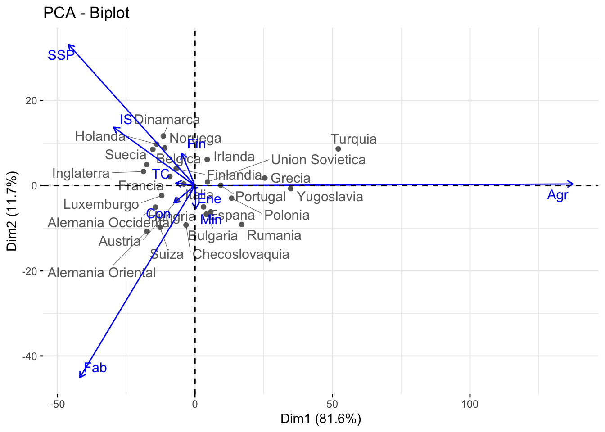
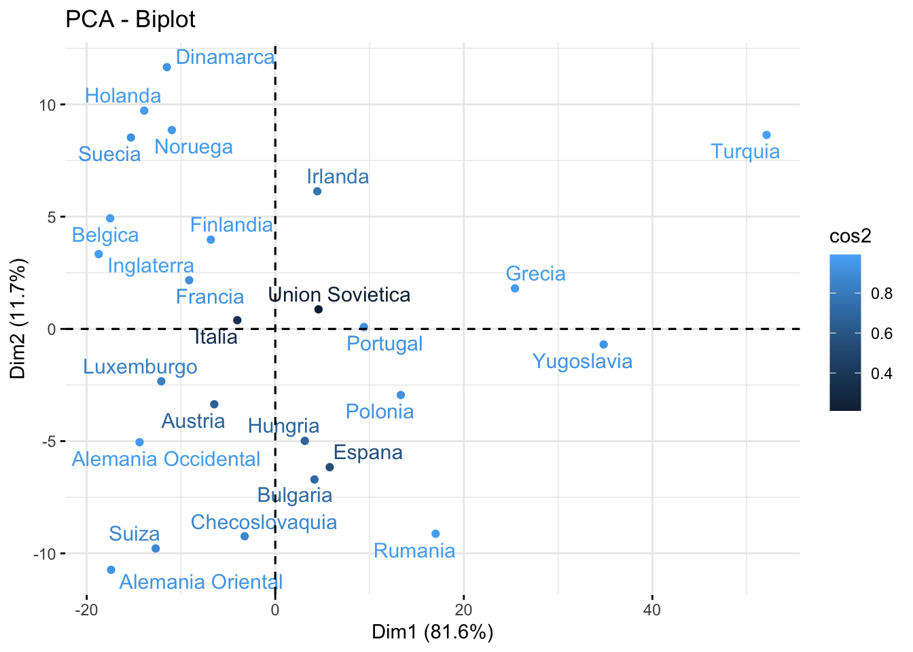

Rows: 26
Columns: 9
$ Agr <dbl> 3.3, 9.2, 10.8, 6.7, 23.2, 15.9, 7.7, 6.3, 2.7, 12.7, 13.0, 41.4, …
$ Min <dbl> 0.9, 0.1, 0.8, 1.3, 1.0, 0.6, 3.1, 0.1, 1.4, 1.1, 0.4, 0.6, 0.5, 0…
$ Fab <dbl> 27.6, 21.8, 27.5, 35.8, 20.7, 27.6, 30.8, 22.5, 30.2, 30.2, 25.9, …
$ Ene <dbl> 0.9, 0.6, 0.9, 0.9, 1.3, 0.5, 0.8, 1.0, 1.4, 1.4, 1.3, 0.6, 0.8, 0…
$ Con <dbl> 8.2, 8.3, 8.9, 7.3, 7.5, 10.0, 9.2, 9.9, 6.9, 9.0, 7.4, 8.1, 8.6, …
$ IS <dbl> 19.1, 14.6, 16.8, 14.4, 16.8, 18.1, 18.5, 18.0, 16.9, 16.8, 14.7, …
$ Fin <dbl> 6.2, 6.5, 6.0, 5.0, 2.8, 1.6, 4.6, 6.8, 5.7, 4.9, 5.5, 2.4, 4.7, 2…
$ SSP <dbl> 26.6, 32.2, 22.6, 22.3, 20.8, 20.1, 19.2, 28.5, 28.3, 16.8, 24.3, …
$ TC <dbl> 7.2, 7.1, 5.7, 6.1, 6.1, 5.7, 6.2, 6.8, 6.4, 7.0, 7.6, 6.7, 9.4, 5…PCA
Enunciado
Considera los datos europa.dat que están disponibles en Aula Digital. Los datos corresponden a los porcentajes de población empleados en diferentes actividades económicas en Europa para el año 1979. Las variables consideradas son: - Agricultura - Minas - Fábricas - Suministro Eléctrico - Construcción - Industrias de Servicio - Finanzas - Servicios Sociales y Personales - Transporte y Comunicaciones.
Utiliza el método de componentes principales para reducir el número de variables, y tratar de determinar grupos de países con comportamientos semejantes en la distribución de su fuerza de trabajo. En este caso, usa la matriz de covarianza para el cálculo de las componentes principales, ya que todos los datos están medidos en la misma escala (porcentaje de la población) y por las caractersticas de los datos, no parece una buena idea considerarlos todos de igual manera.
Solución
Primero, importamos y cargamos los datos:
Ahora, como vamos a utilizar la matriz de varianzas/covarianzas para el análisis de componentes, vamos a visualizar esta matriz:
Agr Min Fab Ene Con IS
Agr 241.6958154 0.53987692 -73.113846 -2.33984615 -13.77209231 -52.4210462
Min 0.5398769 0.94098462 3.026369 0.14796923 -0.04086154 -1.7600308
Fab -73.1138462 3.02636923 49.108738 1.01593846 5.70227692 6.5351385
Ene -2.3398462 0.14796923 1.015938 0.14153846 0.03707692 0.3475385
Con -13.7720923 -0.04086154 5.702277 0.03707692 2.70795385 2.6804769
IS -52.4210462 -1.76003077 6.535138 0.34753846 2.68047692 20.9329385
Fin -9.5920000 -1.20520000 -3.064800 0.11600000 0.07520000 4.6940000
SSP -79.2911385 -1.86169231 7.378615 0.34021538 1.77843077 17.8786154
TC -12.2206769 0.21141538 3.419631 0.19643077 0.88766154 1.1940308
Fin SSP TC
Agr -9.5920 -79.2911385 -12.2206769
Min -1.2052 -1.8616923 0.2114154
Fab -3.0648 7.3786154 3.4196308
Ene 0.1160 0.3402154 0.1964308
Con 0.0752 1.7784308 0.8876615
IS 4.6940 17.8786154 1.1940308
Fin 7.8768 2.0632000 -0.9604000
SSP 2.0632 46.6426462 5.3964923
TC -0.9604 5.3964923 1.9361846Empezamos ahora con el PCA. Utilizamos la función princomp() con el parámetro cor igualado a FALSE. Como los datos están tomados en las mismas unidades, no es necesario reescalarlas. El resultado que obtenemos es el siguiente:
Call:
princomp(x = data, cor = FALSE)
Standard deviations:
Comp.1 Comp.2 Comp.3 Comp.4 Comp.5 Comp.6
17.08176356 6.48234700 3.82393204 2.32861792 1.53278255 1.00289626
Comp.7 Comp.8 Comp.9
0.63612956 0.24985891 0.04287707
9 variables and 26 observations.Para entenderlo mejor, obtenemos los valores propios de cada componente:
eigenvalue variance.percent cumulative.variance.percent
Dim.1 2.917866e+02 81.578357771 81.57836
Dim.2 4.202082e+01 11.748274792 93.32663
Dim.3 1.462246e+01 4.088178743 97.41481
Dim.4 5.422461e+00 1.516023794 98.93084
Dim.5 2.349422e+00 0.656856714 99.58769
Dim.6 1.005801e+00 0.281204052 99.86890
Dim.7 4.046608e-01 0.113135967 99.98203
Dim.8 6.242948e-02 0.017454172 99.99949
Dim.9 1.838443e-03 0.000513996 100.00000Si nos fijamos en la última columna de la tabla anterior, la primera componente principal explica el 81.57% de los datos, mientras que si consideramos dos componentes, explicaríamos un 93.3% de los datos. Cabe mencionar que añadir una componente más no nos proporciona información relevante en cuanto a representación de las variables.
Esto lo visualizamos mejor en el siguiente gráfico:
Como vemos, hay una diferencia notable en las pendientes entre las componentes principales. En concreto, la pendiente entre la primera y la segunda componentes es mucho más pronunciada que entre el resto de pendientes, hecho que reafirma la conclusión anterior.
En el siguiente gráfico vemos como quedarían representadas cada una de las variables en el círculo de correlación variable.

Vamos a explicarlo detalladamente:
La variable “Agricultura” esta aislada del resto, lo que nos lleva a concluir que no está correlacionada con ellas.
El color de cada variable indica cuan bien representadas están; vemos que la variable que mejor representada está es “Agricultura”, seguido de “Fábrica” y “SSPP” (Servicios Sociales y Personales). El color del resto de las variables nos indica que no quedan bien representadas con estas dos componentes.
La longitud de las flechas nos indica que no todas las varibales tienen influencia en las componentes princpales. En efecto, “Min”, “Con”, “TC”, “Ene” y “Fin” son variables con poca representación. Por el contrario, “Agricultura” tiene una fuerte influencia (es la flecha más larga).
Con la información obtenida, veamos si podemos obtener una clasificación de los países por grupos a través de las dos componentes principales.

Como vemos, no hay una separación clara de los países en función de las componentes principales. Para poder analizar más en concreto este punto, consideraremos el siguiente gráfico:

En él, podemos ver los países coloreados en relación a la calidad de representación en el ACP. Los países representados por azul claro tienen una alta representación, mientras que los países con un azul más oscuro no, como es el caso de la Unión Soviética.
Vemos que por ejemplo Portugal y Yugoslavia quedan muy bien explicadas por la CP1; está, daba mucho peso a la variable “Agricultura”. Si accedemos a registros históricos, Yugoslavia era un país agrícola; la mayoría de sus habitantes poseían terrenos para el cultivo y vivían de ellos.
- portugal
- españa
- turquia
- checoslovaquia
Numéricamente, la calidad de representación de las dos CP es la siguiente:
Dim.1 Dim.2
Belgica -17.516687 4.92622849
Dinamarca -11.496688 11.66176637
Francia -9.128686 2.16828207
Alemania Occidental -14.393424 -5.04749385
Irlanda 4.458174 6.13156498
Italia -4.026684 0.38889529
Luxemburgo -12.089752 -2.33236877
Holanda -13.900455 9.72359023
Inglaterra -18.728675 3.33178946
Austria -6.471418 -3.35662962
Finlandia -6.837047 3.97634061
Grecia 25.427083 1.80467718
Noruega -10.972019 8.85877780
Portugal 9.403865 0.08570061
Espana 5.774973 -6.15867547
Suecia -15.311975 8.52674423
Suiza -12.683839 -9.77920054
Turquia 52.115644 8.64165980
Bulgaria 4.156791 -6.70685051
Checoslovaquia -3.246127 -9.23467980
Alemania Oriental -17.415527 -10.73233092
Hungria 3.135737 -4.98695108
Polonia 13.315709 -2.94482700
Rumania 17.011336 -9.12523022
Union Sovietica 4.587043 0.87197041Vamos a realizar el mismo estudio, pero sin considerar los países que son outliers. Para ello, primero vamos a visualizar quiénes son estos países. Utilizamos la función boxplot():

Como vemos, tenemos 8 países que son outliers. Estos son:
Entonces, consideramos el nuevo tibble sin los outliers anteriores:
#datos_sin_outliers=data[,]Realizamos el ACP:
fviz_pca_var(data.acp.turq, repel = TRUE, col.var = “contrib”, gradient.cols = c(“#00AFBB”, “#E7B800”, “#FC4E07”))
fviz_pca_biplot(data.acp.turq, repel = TRUE, col.var = “#2E9FDF”, color para las variables col.ind = “#696969” color para las observaciones )
# Resultados por Variables
#res.var=get_pca_var(data.acp)
#res.var$contrib Contribuciones a las CP